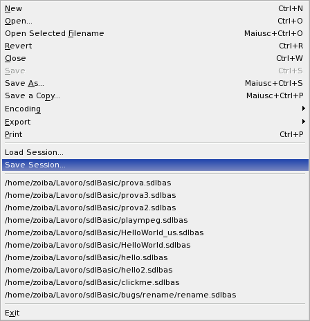

Sessions
You
can save a complete set of your currently opened buffers as a session
for fast batch-loading in the future. Sessions are stored as plain text
files with the extension ".ses".
Use File | Load Session and File | Save Session to load/save sessions.

Loading previously saved session will close your currently opened
buffers. However you will not loose your edits, because you will be
asked to save unsaved buffers first.